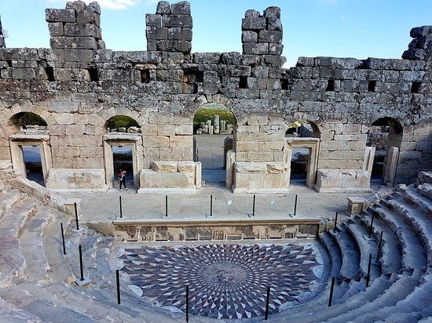

Kibyra Antik Kenti

Kibyra Antik Kenti, Burdur Gölhisar ilçesinin Horzum mahallesinde birbirinden derin yarlarla ayrılan hâkim üç tepelik üzerinde yer almaktadır.Kentin yerleşim alanı oldukça büyüktür. Yapılar, simetrik düzenlenmiş, tepelik teraslanarak göl ve ova manzarasına hâkim konumda ve hiçbir yapı bir diğerinin manzarasını kesmeyecek biçimde yerleştirilmiştir.Şehre girerken solda muhteşem bir anıtsal kapı ile Antik Çağ Anadolu’sunun 12-13 bin kişi kapasitesi ile en görkemli stadyumu bulunmaktadır.
İlerledikçe bazilika, yukarı ve aşağı agora, hamam, gymnasion, tiyatro ve meclis binası ile planlı anıt mezar, hamam, yuvarlak kuleli tak ve su yolları görülmektedir. Meclis binası/müzik evi 3 bin 600 kişi kapasitesiyle Antik Çağ Anadolu’sunun en görkemli eserlerindendir. Meclis binası/orkestranın tam merkezinde bulunan kırmızı, yeşil ve beyaz mermerden yapılmış, yılanlardan oluşan saçları ve insanları taşa çeviren bakışlarıyla Medusa Mozaiği Anadolu’da tektir.
2011 yılında meclis binası önünde, Anadolu’nun en sağlam ve en büyük mozaik alanı olma özelliği taşıyan, 540 metrekare alanı kaplayan mozaik ortaya çıkarılmıştır. Yine meclis binası önünde, Geç Roma Dönemi’ne ait (MS 6-7'nci yüzyıl) Roma Hamamı ve seramik atölyesi bulunmuştur. Kentin bugün görülebilen tüm mimari kalıntıları Roma İmparatorluk Dönemi’ne aittir.
Kibyra, II. Eumenes (MÖ 197-159) zamanında Bergama Krallığı egemenliğinde görünmektedir. Hemen sonrasında Kibyra ve yakın çevresinde konumlanmış antik kentlerden Boubon, Balboura ve Oinoanda’dan teşekkül dörtlü ortak meclis (MÖ 2-1'nci yüzyılda) oluşturulmuştur.Söz konusu birlik MÖ 82 yılında Romalı General Murena tarafından dağıtılarak ortadan kaldırılmış; Asia eyaleti ve diğer kentler Likya Birliği’ne dâhil edilmiştir. MS 23 yılında meydana gelen büyük bir deprem sonucunda yerle bir olan kent, Roma İmparatoru Tiberius tarafından yeniden inşa edilmiştir. Kibyra özellikle MS 1 ve 3'üncü yüzyıllar arasında en parlak dönemini yaşamıştır.Kibyra, demircilik, dericilik, çömlekçilik ve at yetiştiriciliğinde ünlüdür. Şehir halkı son derece savaşçı bir kimliğe sahiptir. Meclis binası, içindeki Medusa başı ve önünde yer alan Türkiye’nin en sağlam ve en büyük mozaik alanı dikkat çekicidir. Kibyra’dan çıkarılan eserler Burdur Müzesi’nde sergilenmektedir.